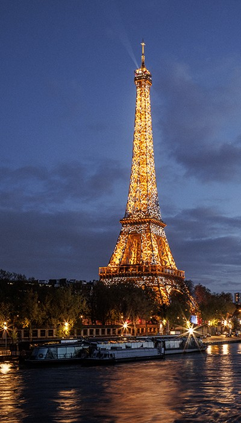

Paris, France
La tour Eiffel
1889
La tour Eiffel
Inaugurée pour l'Exposition universelle, elle culmine à environ 330 mètres. Prévue comme une construction temporaire, elle est devenue le symbole de la France.